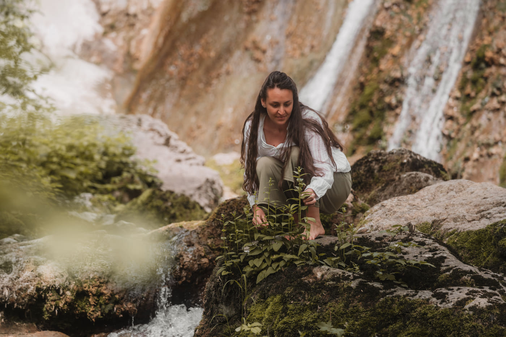
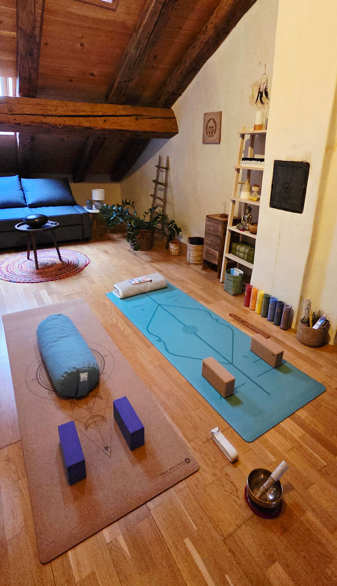

À Propos de Moi
Veronica Caggìa

Bonjour, je suis Veronica, scientifique des plantes (doctorat), coach en mindfulness, enseignante de yoga (RYT 200h, Yoga Alliance), et thérapeute ayurvédique en formation. Je sais ce que c'est que de vivre en pilote automatique.
Pendant dix ans, je me suis formée comme biologiste des plantes, du bachelor au master jusqu'au doctorat. Ce parcours scientifique m'a appris à observer avec patience et à m'appuyer sur les preuves, et pourtant je me sentais souvent déconnectée de moi-même. Découvrir l'Ayurveda, la mindfulness et le yoga a marqué un tournant. Ces pratiques m'ont aidée à ralentir, à écouter intérieurement, et à me reconnecter avec mon corps et mes rythmes de manière plus douce et durable.
Le travail que je partage aujourd'hui s'appuie à la fois sur l'expérience vécue et sur la science : la recherche montre que la mindfulness peut réduire le stress et soutenir la régulation émotionnelle, tandis que le yoga et le travail du souffle aident le système nerveux à sortir du mode « combat-fuite ». J'apporte cette curiosité scientifique dans chaque séance: claire, ancrée, et adaptée à vous.
Maintenant, je veux partager une façon de vivre plus consciemment, avec moins de stress, plus de présence, plus de joie, et un sens plus profond de l'harmonie avec soi-même.
Parcours de formation
- 2012-2022 Doctorat en biologie végétale (BSc, MSc, PhD)
- 2025 Formation de coach mindfulness
- 2025 Formation d'enseignante de yoga (RYT 200h, Yoga Alliance)
- 2026 Yoga ayurvédique (30h, Yoga Alliance)
- En cours Formation de thérapie complémentaire en ayurveda
Où me trouver ?
Rue du Collège 20, La Neuveville
Les séances en ligne sont possibles
